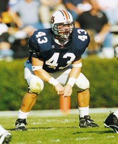
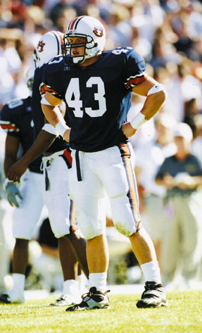

Alex LincolnLinebacker
A dream has to start somewhere for every person. A dream has to be so strong that someone will do anything to achieve it. For senior linebacker Alex Lincoln, the dream to play football for Auburn came true last year, but not before a lot of hard work and determination. Lincoln's dream started on the green grass of his childhood home in Mobile, Ala., when he was a little kid playing football with his friends and brothers. Imagining it was Auburn vs. Alabama, or he was Bo Jackson and other Auburn heroes, Lincoln dreamed of playing for the Tigers. Even when his collegiate career carried him briefly to Mississippi College, Lincoln never stopped dreaming of coming to the Plains. As a standout at Murphy High School, Lincoln received early interest from several top-name Division I programs. Other smaller schools talked to the 6-foot 238-pound linebacker, but all thought he would play for a big-name school. However, no follow-up letters came from the big schools and the recruiting trail seemed to disappear. Lincoln was forced to take a different route to the top. That route ran straight through Clinton, Miss., and Mississippi College. "I knew I was going to play Division I football and that's what made it so hard for me in high school when I didn't get recruited by any big schools," Lincoln said. "I was thinking, "don't they know I am supposed to be there?' Because I knew I was supposed to be there."  With help from one of his high school coaches, Lincoln went to Mississippi College and made an immediate impact. Lincoln was named the team's most valuable freshman in 1996 and then helped lead his team to the American Southwest Conference title as a sophomore in 1997 while earning first team all-conference and academic all-conference honors. After two successful years at Mississippi College, Lincoln decided it was time to start living his dream of playing for the Tigers. "I always wanted to be a Division I player and I figured if I was going to take this chance, I was going to take it with the biggest and best, and that was Auburn," Lincoln said. "I know now that I was right." Although Lincoln was finally on the Plains, his dream of taking the field with the Tigers would have to wait one more season as he redshirted the 1998 season and was only able to play on the scout team. "That year was a nightmare for me. I was prepared to not see a lot of playing time my first year, but I was not prepared to be sitting in the stands," the health administration major said. "It was a real bad time for me. It was painful for me to go to the games. I would sit there with my dad and I would get choked up. I supported the team and tried to keep a good attitude, but it was excruciating." After sitting out his redshirt season, Lincoln finally got the chance he had always wanted. The Auburn coaching staff was so impressed with Lincoln's abilities that he was awarded a scholarship prior to the start of the 1999 season. After three years of dreaming, waiting and battling through frustration, Alex Lincoln was an Auburn Tiger. "I remember standing in the tunnel before we played Appalachian State. I was so anxious to get out there and hear the crowd go crazy. I remember thinking, "this is your chance, don't blow it.'" Lincoln said. "It seemed like that game lasted about 20 minutes, the whole season did really." And it seemed the Tigers' opponents paid the price for Lincoln's dream. In his first season as a Division I player, Lincoln led the Auburn defense with 92 tackles, tied for third in tackles for loss, forced a fumble and returned an interception for a touchdown. "Everything I accomplished last season really didn't hit me until the season was over," Lincoln said. "I went home for Thanksgiving break and was watching all the teams we played during the season and started thinking about each game." Lincoln's biggest moment from the 1999 season came during a fourth-quarter comeback victory over Central Florida. After the Tigers had scored two touchdowns late in the game to take a 21-10 lead, Lincoln intercepted a Golden Knight pass and returned it 20 yards for a touchdown.  "The quarterback couldn't see me in coverage. He threw the ball and the receiver slipped and fell and I stepped in and caught it," Lincoln said. "One of the Central Florida receivers tried to grab my leg after I caught it, but there was no way I was going to let a receiver bring me down. "Rodney Crayton made a great block on an offensive lineman to allow me to get into the end zone. I remember wondering what I was going to do once I scored, but before I could do anything Rob Pate grabbed me and slung me like a rag doll to the ground. All the guys started jumping on me and I was hollering, "get off me, I can't breathe!'" Lincoln steps into a new role this season as the leader of a Tiger defense that returns only four starters and faces a big challenge for the 2000 season. "Every year I have played football on the college level I have been in a new role. I want to take my senior year and be a leader for this team and make big plays," Lincoln said. "I think a leader is not someone who talks a lot, but shows it by action, who works hard and also a guy who helps the younger guys." Entering the 2000 season, Lincoln and the Tigers hope to improve on last season's 5-6 record. But, no matter the outcome, Lincoln knows the fans will be there supporting the Tigers till the very end. "There are no fans anywhere in the world like Auburn fans," Lincoln said. "It is unbelievable to see fans in the stands win or lose, because you know that these people care about you. We have been through some tough times and they have been behind us and they know as players we are working hard." Hard work. Dedication. Desire. Perseverance. Everything it takes to fulfill a dream. Everything Alex Lincoln has given to be here today. This fall children will play tag football in their yards with their friends and dream they are making the game-winning catch or making the game-saving tackle. And they'll dream of wearing the orange and blue jersey of the Auburn Tigers. And they'll dream of being like Alex Lincoln. Up Close With Alex LincolnIf you could take anything from Auburn when you graduate, what would it be?"The eagle on top of the tiger inside Mellow Mushroom. I'd put it in my house."
What was your favorite movie of the summer?
What is your favorite food?
What has been your favorite class at Auburn?
If you were on "Who Wants to Be A Millionaire?" and you had to phone a friend, who would you call?
© 1999 Auburn Network, Inc. |